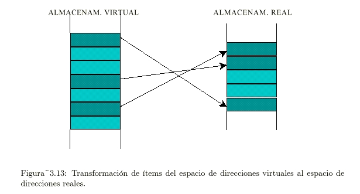
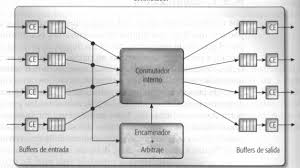
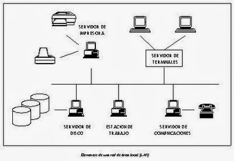

La computación paralela es una forma de cómputo en la que muchas instrucciones se ejecutan simultáneamente, operando sobre el principio de que problemas grandes, a menudo se pueden dividir en unos más pequeños, que luego son resueltos simultáneamente (en paralelo).
Instrucción Única, Datos Únicos. Un único procesador se encarga de gestionar simultáneamente un algoritmo como una única fuente de datos. SISD representa una organización informática que tiene una unidad de control, una de procesamiento y una de memoria similar a la computadora serie. Ejecuta las instrucciones secuencialmente y puede o no ser capaz de realizar procesamiento en paralelo, dependiendo de su configuración.
Los procesadores múltiples son estándar en las computadoras que utilizan Instrucción Múltiple, Datos Únicos (MISD). Al utilizar varios algoritmos, todos los procesadores comparten los mismos datos de entrada. Pueden realizar simultáneamente muchas operaciones en el mismo lote de datos. La cantidad de operaciones se ve afectada por la cantidad de procesadores disponibles. La salida de un procesador se convierte en la entrada del siguiente.
Las computadoras que utilizan la arquitectura SIMD (Instrucción Única, Datos Múltiples) tienen múltiples procesadores que ejecutan instrucciones idénticas. Sin embargo, cada procesador proporciona las instrucciones con su colección única de datos. Aplican el mismo algoritmo a varios conjuntos de datos. La arquitectura SIMD cuenta con varios componentes de procesamiento, los cuales están bajo la supervisión de una única unidad de control.
Instrucción Múltiple, Datos Múltiples. Se caracterizan por la presencia de múltiples procesadores y cada uno de ellos es capaz de aceptar de forma independiente su flujo de instrucciones. Este tipo de computadoras tienen muchos procesadores y, además, cada CPU extrae datos de un flujo de datos diferente. Una computadora MIMD es capaz de ejecutar muchas tareas simultáneamente. Desarrollar los sofisticados algoritmos que impulsan estas máquinas es más complejo.
Programa Único, Datos Múltiples, son un subconjunto de MIMD. Cada uno de sus procesadores es responsable de ejecutar las mismas instrucciones. Es una programación de paso de mensajes utilizada en sistemas informáticos de memoria distribuida. Un grupo de computadoras separadas, denominadas colectivamente nodos, forman una computadora con memoria distribuida. Cada nodo inicia su aplicación y utiliza rutinas de envío/recepción para enviar y recibir mensajes cuando interactúa con otros nodos.
La arquitectura de computadoras secuenciales se basa en el modelo introducido por John Von Neumann. En este modelo, encontramos los siguientes componentes:
Una dirección de memoria es un identificador para una localización de memoria con la cual un programa informático o un dispositivo de hardware pueden almacenar un dato para su posterior reutilización. Una forma común de describir la memoria principal de una computadora es como una colección de celdas que almacenan datos e instrucciones.
El direccionamiento de la memoria puede considerarse desde dos puntos de vista:
El sistema de numeración utilizado por los informáticos para representar las direcciones de memoria en el texto escrito no suele ser la decimal, sino el hexadecimal.
Un bus de direcciones de 8 bits puede acceder a 256 posiciones (en hexadecimal es el rango 00-FFh). En caso de direcciones de 16 bits, se puede acceder a 65.536 posiciones (es el rango 0000-FFFFh).
La memoria compartida es aquel tipo de memorias que puede ser accedida por múltiples programas, ya sea para comunicarse entre ellos o para evitar copias redundantes. La memoria compartida es un modo eficaz de pasar datos entre aplicaciones.
Dependiendo del contexto, los programas pueden ejecutarse en un mismo procesador o en procesadores separados.
Se denomina multiprocesador a un computador que te permite abrir programas en más de una CPU por lo que puede ejecutar simultáneamente varios hilos pertenecientes a un mismo proceso o bien a procesos diferentes. Las computadoras multiprocesador presentan problemas de diseño. Estos problemas derivan del hecho de que dos programas pueden ejecutarse simultáneamente y, potencialmente, pueden interferirse entre sí. Existen 3 arquitecturas que resuelven estos problemas:
Son redes que pueden cambiar la topología de comunicación durante la ejecución de los programas o entre dos ejecuciones de programas.
Las redes dinámicas se han utilizado esencialmente en los multiprocesadores de memoria compartida: la red dinámica soporta, por consiguiente, la carga de unir los N procesadores a los bancos de la memoria central.
Un medio compartido se refiere a un tipo de red donde múltiples dispositivos comparten un único canal de comunicación para enviar datos. Varios dispositivos, como computadoras, servidores, impresoras, etc., están conectados a través de un medio compartido, como un cable Ethernet o una red inalámbrica.
Cuando la red se quiere conectar a varios dispositivos conlleva a interferencias o colisiones, por lo tanto se debe de establecer un mecanismo que regule esto, esto nos lleva a la conmutación.
Son aquellas en las que la comunicación entre un host origen y un host destino se realiza mediante la transmisión de datos a través de una red de nodos intermedios.
Cada nodo almacena temporalmente la información antes de reenviarla.
El proceso consta en 3 fases: establecimiento de la conexión, transferencia de la información y liberación de la conexión.
Los sistemas de memoria construida son una forma de organización de la memoria en la computación paralela en la que cada procesador tiene su propia memoria local. Esto permite una mayor independencia entre los procesadores y reduce la necesidad de acceder a una memoria compartida.
En el campo de la computación paralela, existen numerosos casos de estudio que han demostrado la eficacia y los beneficios de los enfoques paralelos en diferentes dominios. Algunos ejemplos incluyen el uso de computación paralela en simulaciones científicas, análisis de grandes conjuntos de datos, renderizado de gráficos y modelado de sistemas complejos.
 Volver a la página principal